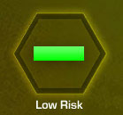
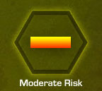
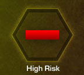

Once it is determined that an RFR risk assessment will be conducted, the health threat must be properly identified, analyzed, and controlled. After completing the risk assessment, an emitter will be classified as a non-hazardous emitter or a potentially hazardous emitter, based on accessibility to personnel. Select each tab to learn more about the RFR risk assessment process.
Identify
Identification of potential RFR emitters is the first phase of the RFR risk assessment process. It begins with an initial, comprehensive survey followed by continuous annual surveillance. It’s important to conduct this type of surveillance to ensure that all RFR emitters are identified and that new emitters which are introduced will not cause adverse health effects.
When the emitter is identified, all pertinent information will be gathered to determine the emitter’s hazard potential. This information will be documented and maintained using AF Form 2759, Radiofrequency Radiation Emitter Survey Data.
Analyze
The ultimate goal for the analysis phase of the RFR risk assessment process is to determine a safe distance for personnel to work in relation to the emitter. During the analysis phase of this process you should:
|  |  |  |
Control
During the control phase of the RFR risk assessment process, the primary goal is to control the health threat by: